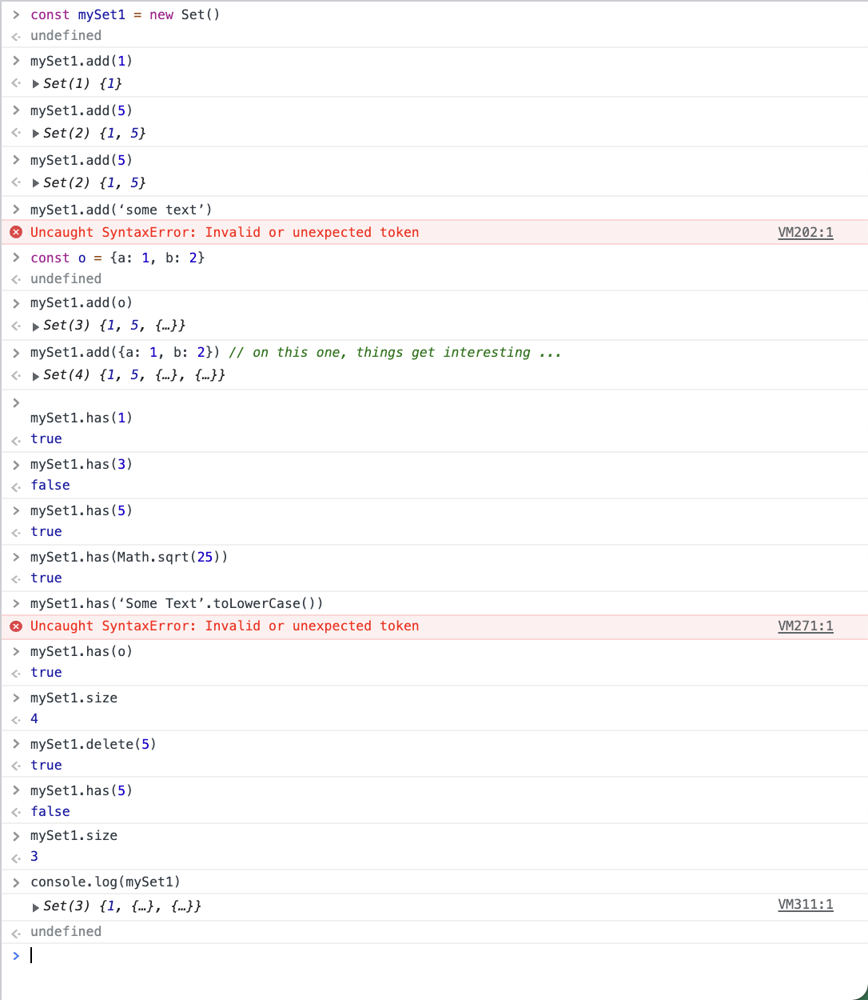

The following questions are from GMAT Prep Plus 2019, ISBN 1506234895, page 709:
- If z is an integer is z even? You are given:
- (z+m) / 3 = 2m + 1 where m is an integer
- z³ is even
- The set S contains n integers. Is the sum of all the elements of set S odd? You are given:
- All the elements of S are prime numbers
- n = 2
- If m is an odd number and p is a prime number, which of the following must be odd?
- mp
- m(m + p)
- m - p
- m² + 2p² + 1
- m²(m + 2p)
m = 2
(z + m) / 3 = 2m + 1
(z + 2) / 3 = 2*2 + 1
(z + 2) / 3 = 5
z + 2 = 5*3
z = 5*3 - 2
(13 + 2) / 3 = 5
z³
13*13*13
169*13
2197
m = 3
(z + 3) / 3 = 7
z + 3 = 21
z = 18
18*18*18
5832
m = 5
(z + 5) / 3 = 11
z + 5 = 33
z = 38
--------------------------------------
S contains n integers
n = 2
S = {2 prime numbers}
S = {2, 3}
sum of S equals 5
S = {3, 5}
sum of S equals 8
S = {5, 7}
sum of S equals 12
S = {2, 5}
sum of S equals 7
S = {2, 7}
sum of S = 9
S = {2, 11}
sum of S = 13
S = {2, 13}
sum of S = 15
--------------------------------------
mp = false
m(m + p) = m*m + m*p = false
m - p = false
m*m + 2p*p + 1 = false
m²(m + 2p) = true
2. For the homework that was due June 11, 2021, turn it into an html file with associated image files. Include a screenshot here.
3. In p5js draw a box that’s 800x800 pixels with a blue border and then draw a circle with a red border that fits snugly within that. Then write a loop that iterates 4000 times; each time it will choose a random x value from 1-800 and a random y value from 1-800 and draw a dot at (x,y) within your square.
4. In p5js draw a box that’s 800x800 pixels and make it look like graph paper.
- write a function that can fill in some of the squares to form a smiley face
- write a function that can fill it some of the squares to form the “glider” image
5. Here we have an image of a square within a square. Recreate this image in p5js and enhance it as described below. Also, answer the questions.
- Create an 800x800 canvas to contain your image. Make the blue square have size 600x600. (Pixels)
- In the blue square add the perpendicular line symbol to indicate that the outer corners are 90° angles.
- Just using your eyeball, what do you estimate is the degree measure of the smaller angle of the blue triangles? Or better, if you have a protractor, hold it up to the screen and try to get a measure accurate to a degree or so. Another method would be to play with the online interactive unit circle and make a similar triangle: https://www.mathsisfun.com/algebra/trig-interactive-unit-circle.html -- and then look at what angle measure you have.
- In all four of the blue triangles label the smaller acute angle as θ (theta).
- There is a theorem in geometry that says all of the angles of a triangle add up to ⅅ degrees. What is the value of ⅅ?
- Given your answer to that last question, and looking at the blue triangles, what can you conclude about the value of larger acute angles relative to θ?
- Label all of those four larger acute angles with the value you just derived.
6. Basic concepts of mathematical Set Theory:
- Show an example of a set containing 5 integers
- The empty set is written like this {}. And remember, ∩ means “intersection”. For instance, {1, 2, 3} ∩ {9, 10, 11, 12} = {}. The empty set is also written like this: ∅.
- Give an example of two sets whose intersection is ∅.
- Give an example of two sets whose intersection is not ∅.
- Give three examples of infinite sets.
7. 𝓟 -- the power set. Let 𝓟(x) be the function that takes a set x and returns a set containing all of the subsets of x. For example, suppose x is the set containing just the numbers 1 and 2, i.e., x={1, 2}. (Note: this is mathematical notation, not JavaScript notation.) Then 𝓟({1, 2}) = {{}, {1}, {2}, {1, 2}}. Evaluate the following:
- 𝓟({1, 2, 3})
- 𝓟({2, 3, 4})
- 𝓟({1, 2, 3, 4})
- 𝓟({2, 3, 4, 5}) ∩ 𝓟({4, 5, 6, 7})
8. Set membership. Answer true/false to the questions below. For reference, see https://en.wikipedia.org/wiki/Element_%28mathematics%29
- 1 ∈ {1, 2, 3, 27}
- 10 ∈ {2, 3, 5, 7, 11, 13, 17, 19, 23, 29, 31}
- 1048 ∈ {2ⁿ: where n is an integer}
- Let A = {all real numbers less than 100}, B = {all real numbers greater than π} -- 10 ∈ A ∩ B
- 7 ∈ the set of prime numbers
- 7 ∈ the set of solutions to the equation (x-4)(x+3)(2x+1)(x+5) = 0
- {1, 2} ∈ {1, 3, {1, 2}, 5, {5}}
- {1, 2, 3} ∈ 𝓟({1, 2, 3, 4})
9. Now, sets in JavaScript. Easy console work, then write a paragraph explaining what’s going on:
- const mySet1 = new Set()
- mySet1.add(1)
- mySet1.add(5)
- mySet1.add(5)
- mySet1.add(‘some text’)
- const o = {a: 1, b: 2}
- mySet1.add(o)
- mySet1.add({a: 1, b: 2}) // on this one, things get interesting ...
- mySet1.has(1)
- mySet1.has(3)
- mySet1.has(5)
- mySet1.has(Math.sqrt(25))
- mySet1.has(‘Some Text’.toLowerCase())
- mySet1.has(o)
- mySet1.size
- mySet1.delete(5)
- mySet1.has(5)
- mySet1.size
- console.log(mySet1)

So, you make a set and add numbers to the set. I am pretty sure kai ment to put "" instead of ``, but anywhoo, we test out the different components of the set, checking to see if it has, what we want in it.
10. What is a Venn Diagram? Discuss.
A venn diagram is 2 overlapping circles. Each circle represents a catagory and they overlap whenever they include the same thing.
11. Draw the following Venn Diagrams using p5js; do this question early during the assignment period:
- 2 sets that intersect
- 3 sets that intersect
- 4 sets that intersect
12. For the previous question, when you drew 4 sets that intersected, did they intersect in all combinations of ways possible? If not, use p5js to draw 4 sets that do intersect in all ways possible.
- Sets, a simple practical example: the set of amino acids, and its various subsets. In the diagram:
- What amino acids are both prolines and negatively charged?
- What is the set of amino acids that are both tiny and aromatic?
- Are polar amino acids a proper subset of the negatively charged amino acids? (“Proper” meaning strictly smaller than the enclosing set.)
- List the amino acids that would be in the small subset minus the tiny subset.
- How many amino acids are there in the intersection of the aliphatic subset and the small subset?
- List the amino acids that are in the union of the aromatic and the positive subsets.
Write a function gcd(a, b) that takes two non-negative integers a and b and uses the Euclidean Algorithm to find their Greatest Common Divisor. For reference you can look at https://en.wikipedia.org/wiki/Euclidean_algorithm or Number Theory: Euclidean Algorithm - An example by Socratica: https://www.youtube.com/watch?v=fwuj4yzoX1o . And then for completeness, show the previous gcd function you wrote that depended on sieve.
We are going to find a way to list, in order, every single positive integer and fraction in the mathematical universe. Enumerate all of the rational numbers m/n first where m+n≤2, then m+n≤3, then m+n≤4, etc., omitting numbers that are not relatively prime; i.e., omit when gcd(m,n) > 1. Write a function enumerateFractions(max) that will return an array of positive fractions. (And max will be a positive integer greater than 1.)
First it lists fractions m/n where m+n≤2.
Then it lists fractions m/n where m+n≤3.
Then it lists fractions m/n where m+n≤4.
... (pattern continues)
Then it lists fractions m/n where m+n≤max.
It will omit fractions m/n when gcd(m,n) > 1.
Make sure the following assertions pass:
console.assert(enumerateFractions(2) == [‘1/1’]
console.assert(enumerateFractions(3) == [‘1/1’, ‘2/1’, ‘1/2’]
console.assert(enumerateFractions(4) == [‘1/1’, ‘2/1’, ‘1/2’, ‘3/1’, ‘1/3’]
console.assert(enumerateFractions(5) == [‘1/1’, ‘2/1’, ‘1/2’, ‘3/1’, ‘1/3’, ‘4/1’, ‘3/2’, ‘2/3’, ‘1/4’]
console.assert(enumerateFractions(6) == [‘1/1’, ‘2/1’, ‘1/2’, ‘3/1’, ‘1/3’, ‘4/1’, ‘3/2’, ‘2/3’, ‘1/4’, ‘5/1’, ‘1/5’]
console.assert(enumerateFractions(7) == [‘1/1’, ‘2/1’, ‘1/2’, ‘3/1’, ‘1/3’, ‘4/1’, ‘3/2’, ‘2/3’, ‘1/4’, ‘5/1’, ‘1/5’, ‘6/1’, ‘5/2’, ‘4/3’, ‘3/4’, ‘2/5’, ‘1/6’]
A bus seats 52 people (see the floorplan).
First, as mental math, estimate: How many ways can 52 people be arranged in this bus? What order of magnitude do you get? For example, if your estimate is a million arrangements, then your order of magnitude is 6 -- because a million has 6 zeroes.
Now, calculate the exact number of arrangements
Take the base 10 log of that result and compare it to the magnitude you guessed. Discuss.
Write and show all of the following functions on the same graph:
A first degree polynomial that crosses the x-axis at 1 point
A second degree polynomial that crosses the x-axis at 0 points
A second degree polynomial that touches the x-axis at exactly 1 point
A second degree polynomial that crosses the x-axis at 2 points
A third degree polynomial that crosses the x-axis at exactly 1 point
A third degree polynomial that crosses/touches the x-axis at exactly 2 points
A third degree polynomial that crosses the x-axis at exactly 3 points
A fourth degree polynomial that crosses the x-axis at 0 points
A fourth degree polynomial that touches the x-axis at exactly 1 point
A fourth degree polynomial that crosses the x-axis at exactly 2 points
A fourth degree polynomial that crosses/touches the x-axis at exactly 3 points
A fourth degree polynomial that crosses the x-axis at exactly 4 points
Graph the following. Make two graphs; first graph all of them on the same graph, then graph just f and t₅ on the same graph. Choose a viewing window that helps us see how these functions curve around.
f(x) = sin(x)
t₀(x) = x - x³/3!
t₁(x) = x - x³/3!
t₂(x) = x - x³/3! + x⁵/5!
t₃(x) = x - x³/3! + x⁵/5! - x⁷/7!
t₄(x) = x - x³/3! + x⁵/5! - x⁷/7! + x⁹/9!
t₅(x) = x - x³/3! + x⁵/5! - x⁷/7! + x⁹/9! - x¹¹/11!
“t” is for “Taylor Series” -- a series of increasingly accurate approximations
Write 5 analytic, cogent, investigative, subtle, perceptive, inquisitive functions and put them all on the same graph. Restrictions:
Only use these things to make your functions:
log
+
-
/
abs
(
)
numbers
function composition
And make these definitions in your code:
const log = Math.log
const abs = Math.abs
Screeps update:
Show a screenshot of Screeps and describe what’s going on
1 day later: show another screenshot, record the date, and describe what has changed
2 days after that: show a third screenshot, record the date, describe what has changed
3 days after that: show a fourth screenshot, record the date, describe what has changed
5 days after that: show a fifth screenshot, record the date, describe what has changed
8 days after that: show a sixth screenshot, record the date, describe what has changed
Write a summary describing the whole arc of what happened. Include a few interesting code samples and explain them.
Kaboomjs. Upgrade your Kaboom game, or write a new one. This should probably be the question on this assignment that you spend the most time on. Write an essay about your Kaboom game. Be sure to include code samples.
Zombie Flexbox game. Go through two more levels. Take two screenshots at interesting moments and explain all of the Flex details you are working on.
:zombie-hunter2: :archer-shooting: :zombie-couple:
Simplify the following expression: 2⁰2¹2²2³2⁴2⁵2⁶2⁷2⁸2⁹2¹⁰2¹¹2¹²2¹³2¹⁴2¹⁵2¹⁶2¹⁷2¹⁸2¹⁹2²⁰2²¹2²²2²³2²⁴2²⁵2²⁶2²⁷2²⁸2²⁹2³⁰2³¹2³²2³³2³⁴2³⁵2³⁶2³⁷2³⁸2³⁹2⁴⁰2⁴¹2⁴²2⁴³2⁴⁴2⁴⁵2⁴⁶2⁴⁷2⁴⁸2⁴⁹2⁵⁰
24. Review randObject from the previous homework. Mentally (or in the console) run this code: obj = randObject(). Is it necessary that obj will have two different properties that share the same value? Discuss
Yes, in all probability is necessary because the sample size is enormous.
25. True or False: At any given time there live at least two people in Nicaragua with the same number of hairs on their heads. Discuss.
Yes, in all probability is necessary because the sample size is enormous.
Mental math with handstand: Go through the powers of two 2⁰ 2¹ 2² 2³ 2⁴ 2⁵ 2⁶ 2⁷ 2⁸ 2⁹ 2¹⁰ 2¹¹ 2¹² 2¹³ 2¹⁴ 2¹⁵ 2¹⁶ -- but this time complete the entire sequence while in a handstand against the wall :bangbang: Last time was relaxation, this time your arms will give you a time limit! Try to accomplish this at least 2³ times during the assignment period. Discuss.
Mental math at night: again, before going to sleep, try this exercise: go through all the prime numbers less than 169. Note: It helps if you know your multiples of 7 and 11 up to 169. Do this five times during the assignment period. After each time, check your work the next morning, write down the primes you missed or the numbers you thought were prime but were not. After the 5 times, discuss.
Date of 1st try, primes missed or wrong
Date of 2nd try, primes missed or wrong
Date of 3rd try, primes missed or wrong
Date of 4th try, primes missed or wrong
Date of 5th try, primes missed or wrong
Discuss
Advanced, extra credit. Implement step 0 of Make A LISP https://github.com/kanaka/mal .
Fork the repository https://github.com/kanaka/mal
Clone your forked repository, e.g.:
git clone git@github.com:purplejacket/mal.git
but you'll use your own fork for the above
Change directory to the repo
cd mal
Take a look at README.md. Note that it mentions JavaScript. We will be implementing our own JavaScript version, so let's avoid reading about the existing implementation or looking at the existing js code.
Create a new directory and file for our implementation, and then commit/push
mkdir impls/javascript
touch impls/javascript/step0_repl.js
git add .
git commit -m "empty javascript step 0 file"
git push
In README.md click into the step0_repl instructions. Read the instructions and then implement step 0 into the step0_repl.js file.
Make sure the tests pass, as described in the step0_repl instructions, then commit your work.
Advanced, extra credit. Let's talk about a function f that takes in a real number and gives back a real number. And we are going to define a special property called játkuva that f might or might not have for some particular real number r. A function f from ℝ to ℝ is játkuva at a value r if given ε > 0 there exists δ > 0 such that if |r - x| < δ then |f(r) - f(x)| < ε.
Give an example of a function f that is játkuva at r=3 and explain why. Hint: JavaScript has functions on the Math object for which this is true.
Give an example of a function f that is not játkuva at r=3 and explain why. Hint: JavaScript has functions on the Math object for which this is true.
Note: For the above, you can either choose a function from Math or make up your own function. Also, a subtlety: We are talking about a "mathematical" function f (as compared to a JavaScript function) that works on real numbers, and not floating point numbers. Floating point numbers can only approximate most real numbers (for example Math.PI is an approximation of π). The fact that we mention Math only means you might like to look there for examples.